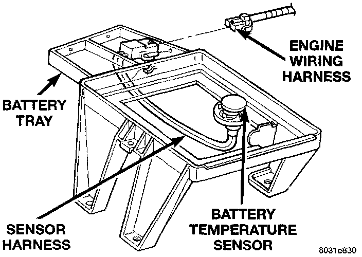

Testing
Battery Temperature Sensor TestingTo perform a complete test of this sensor and its circuitry, refer to the appropriate Powertrain Management/Computers and Control Systems/Testing and Inspection/Diagnostic Charts Procedures. To test the sensor only, refer to the following:
Battery Temperature Sensor:

1. The sensor is located under the battery and is attached to the battery tray. A two-wire pigtail harness is attached directly to the sensor. The opposite end of this harness connects the sensor to the engine wiring harness.
2. Disconnect the two-wire pigtail harness from the engine harness.
3. Attach ohmmeter leads to the wire terminals of the pigtail harness.
4. At room temperature of 25 °C (75 - 80 °F), an ohmmeter reading of 9,000 (9K) to 11,000 (11K) ohms should be observed.
5. If reading is above or below the specification, replace the sensor.
6. Refer to the Removal and Installation for procedures.